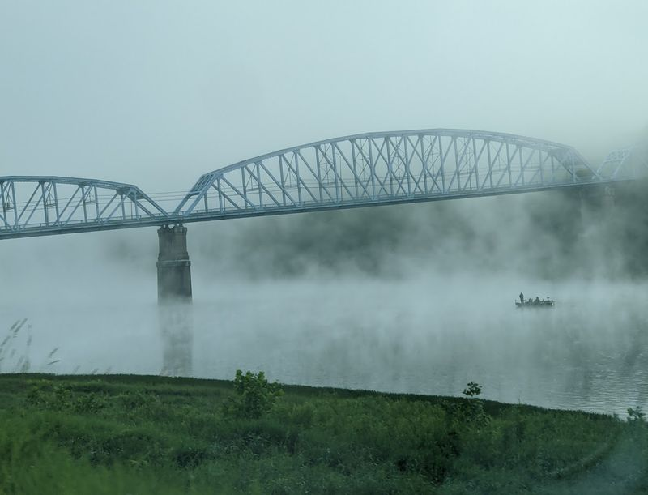
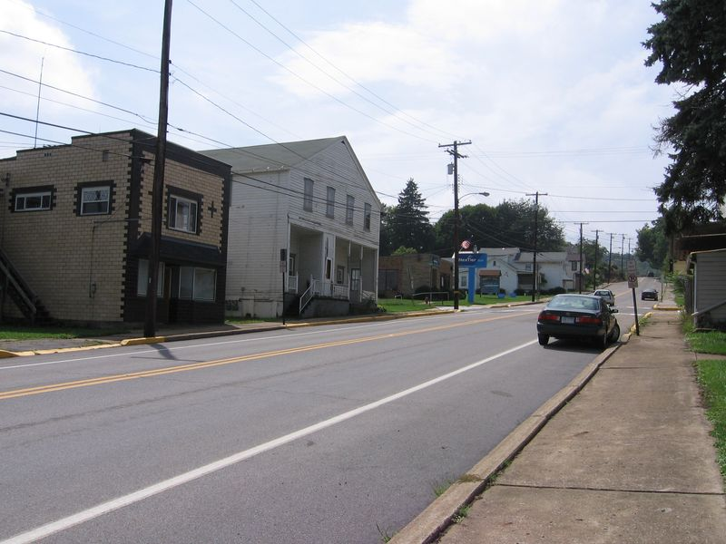
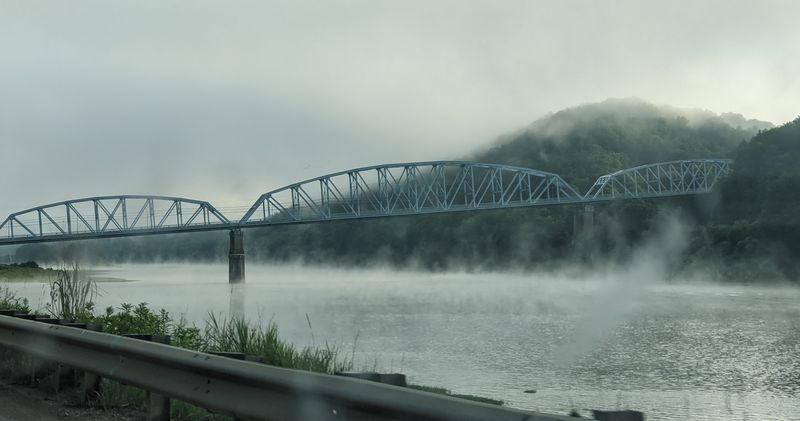
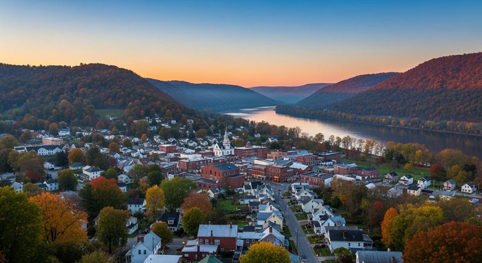
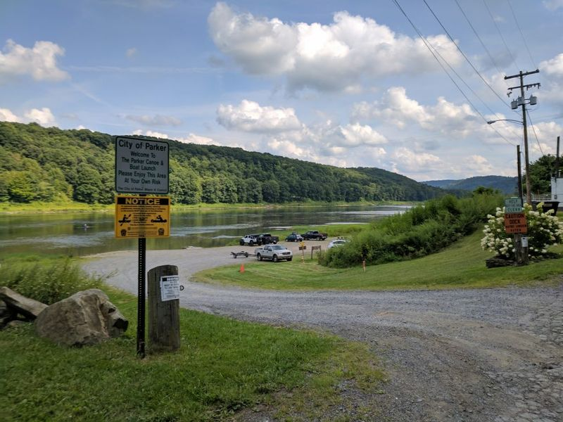
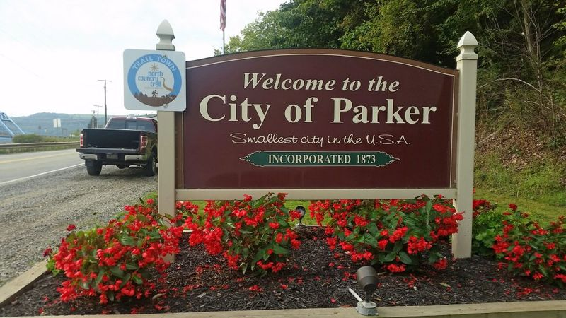

What It’s Like to Spend Time in Pennsylvania’s Smallest Town
Arriving here feels instantly different than anywhere else. The quiet takes over immediately, shaping an experience that forces you to slow down and notice the everyday character of a very small community.

Walking the Streets
Walking the streets at an unhurried pace allows you to appreciate the quiet instead of fighting it. The Allegheny River runs right alongside, beautifully shaping the entire layout of the area.


A Memorable Character
It becomes clear why this town remains so incredibly memorable despite its physical size. Leaving with a new appreciation for tiny river towns makes you realize how much character is packed into such a small spot.


